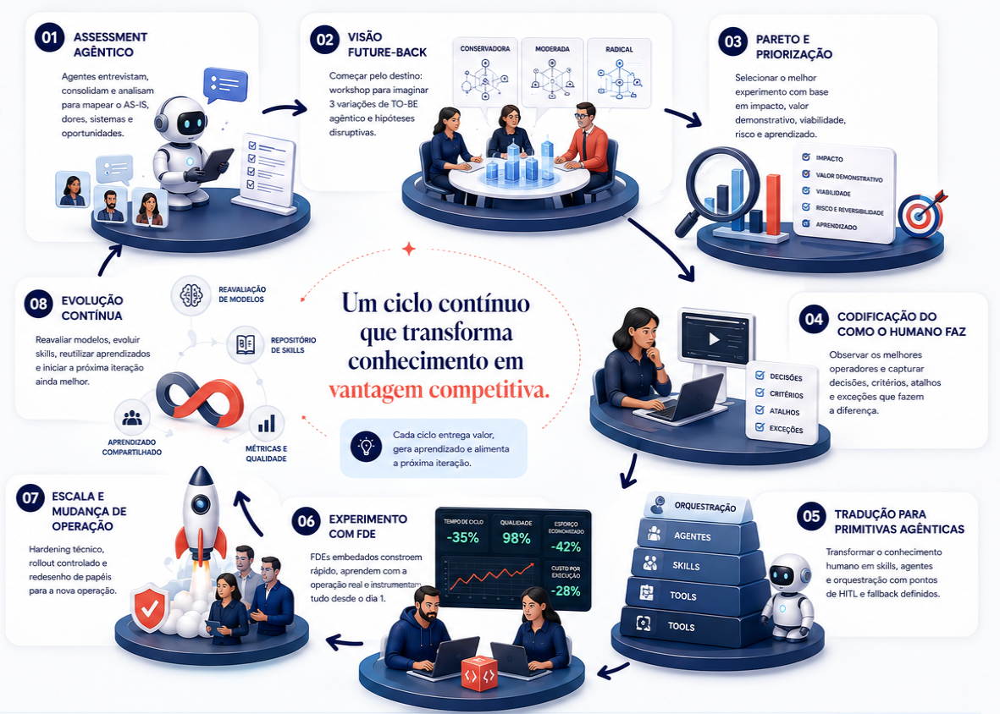

Agentic Process Reinvention
Um método para repensar processos operacionais a partir de uma mentalidade future-back e agêntica — não como otimização das etapas existentes, mas como redesenho do que o processo poderia ser se nascesse hoje, num mundo onde agentes de IA são cidadãos de primeira classe da operação.
Por que este framework existe
A maior parte das iniciativas de IA em operações começa pelo lugar errado: pega o processo atual e tenta encaixar IA por cima. O resultado é otimização disfarçada de inovação — ganhos marginais, sem mudar a economia da operação.
Este framework propõe o contrário: partir do destino — como o processo seria se desenhado hoje, com agentes desde o primeiro traço — e chegar lá por ciclos curtos e mensuráveis, não por big bang. Cada ciclo entrega um pedaço protótipo do futuro rodando no presente, gera aprendizado codificado em ativos reutilizáveis, e barateia o ciclo seguinte.
O processo, em um diagrama
As oito fases formam um ciclo iterativo, não uma linha reta. A primeira volta é a mais investigativa; as seguintes ficam progressivamente mais executivas, porque já existem vocabulário, plataforma e padrões codificados.

Ciclo iterativo de valor — descobrir, codificar, operar, evoluir.
Princípio orientador
"
Entender como o melhor humano faz hoje → traduzir para primitivas de IA (skills, agentes, comandos, orquestração) → usar IA no próprio processo para acelerar a descoberta e a codificação.
Não é "colocar IA em cima do processo atual"; é repensar o processo partindo do que ele poderia ser se nascesse hoje, num mundo agêntico — mas chegando lá por incrementos mensuráveis.
Os 3 movimentos
I
Fases 01 — 03
Descoberta e definição
Entender o estado atual, projetar o estado futuro, escolher onde atacar primeiro.
II
Fases 04 — 06
Construção e validação
Codificar como o melhor humano faz, traduzir para primitivas agênticas, experimentar em campo.
III
Fases 07 — 08
Escala e composição
Colocar em produção, redefinir operação, evoluir continuamente e capitalizar aprendizado.
As 8 fases
Assessment Agêntico
Agentes entrevistam e consolidam o AS-IS. Humanos seniores interpretam e desafiam.
Visão Future-Back
Workshop estruturado para imaginar três variações de TO-BE — conservadora, moderada, radical.
Pareto e Priorização
Escolher um experimento por iteração, com critérios de sucesso definidos antes.
Codificação do humano
Observar os top performers e capturar decisões, critérios, atalhos e exceções.
Primitivas agênticas
Traduzir conhecimento em tools, skills, agentes e orquestração — com HITL desenhado.
Experimento em campo
Engenheiros embedados constroem rápido, com a operação real e instrumentação desde o dia 1.
Escala e operação
Hardening técnico, rollout controlado e redesenho explícito de papéis humanos.
Evolução contínua
Reavaliar modelos, evoluir o repositório de skills, capitalizar aprendizado em todos os ciclos.
Um ciclo contínuo que transforma conhecimento em vantagem competitiva
Cada volta entrega valor mensurável num pedaço (o Pareto da vez), gera aprendizado e alimenta a próxima iteração. Skills e agentes construídos para um processo se reutilizam em outros — o segundo ciclo é mais rápido que o primeiro, o terceiro mais que o segundo.
∞